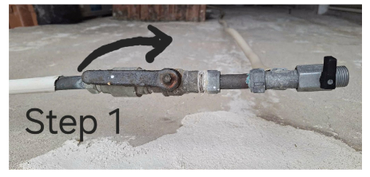
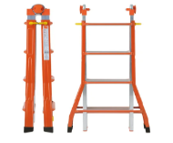
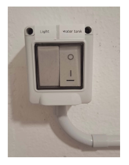
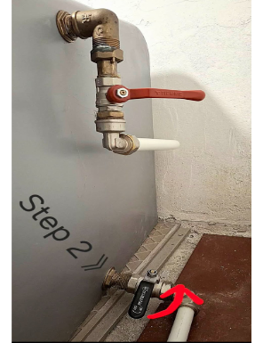
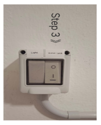
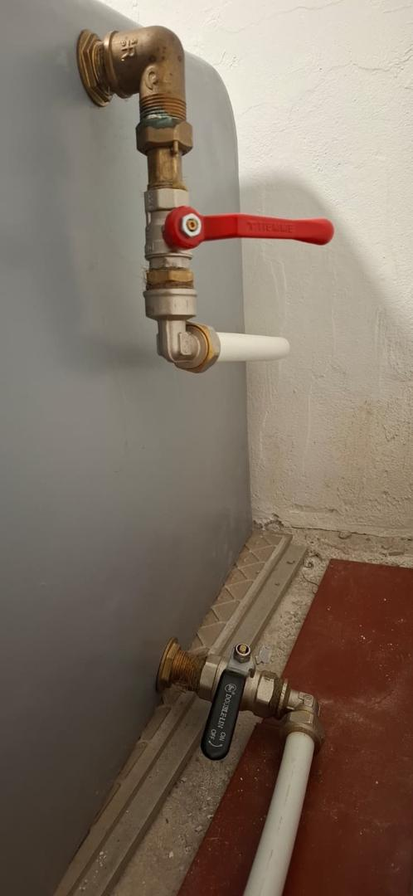
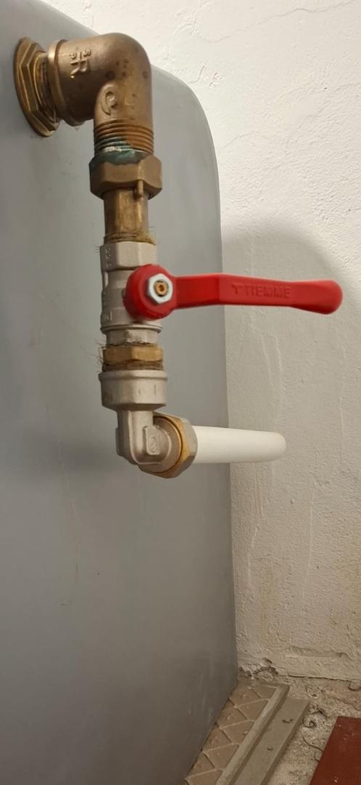
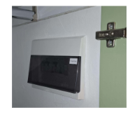
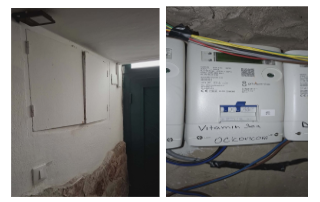

Dear Guest, we are delighted to host you. We hope your stay will be relaxing and filled with unforgettable moments.
Mondello is one of the most charming seaside areas of Palermo, famous for its crystal‑clear waters, white sandy beach, and stunning sunsets. Whether you're here to unwind by the sea, explore Palermo’s rich history, or enjoy the delicious Sicilian cuisine, we hope our home will be the perfect base for your stay.
Please make yourself at home and enjoy all the amenities provided. If you need anything or have any questions during your stay, don’t hesitate to contact us — we’re happy to help!
💛 Thank You for Choosing Our Home
We truly appreciate you selecting our home for your time in Palermo, and we are grateful for your trust. We’ve prepared everything with care to make your stay comfortable and relaxing. It means a lot to us that you are here, and we hope you create wonderful memories during your visit. We wish you a wonderful holiday in Sicily and a fantastic stay in Mondello.
Caro Ospite, siamo davvero lieti di ospitarti. Speriamo che il tuo soggiorno sia rilassante e pieno di momenti indimenticabili.
Mondello è una delle zone balneari più affascinanti di Palermo, famosa per le sue acque cristalline, la spiaggia di sabbia bianca e i tramonti mozzafiato. Che tu sia qui per rilassarti in riva al mare, esplorare la ricca storia di Palermo o gustare la deliziosa cucina siciliana, speriamo che la nostra casa sia la base perfetta per il tuo soggiorno.
Sentiti come a casa tua e goditi tutti i servizi forniti. Se hai bisogno di qualcosa o hai domande durante il tuo soggiorno, non esitare a contattarci — siamo felici di aiutarti!
💛 Grazie per aver scelto la nostra casa
Apprezziamo davvero che tu abbia scelto la nostra casa per il tuo soggiorno a Palermo, e siamo grati per la tua fiducia. Abbiamo preparato tutto con cura per rendere il tuo soggiorno confortevole e rilassante. Significa molto per noi che tu sia qui, e speriamo che tu possa creare ricordi meravigliosi durante la tua visita. Ti auguriamo una splendida vacanza in Sicilia e un soggiorno fantastico a Mondello.
Lieber Gast, wir freuen uns sehr, Sie bei uns begrüßen zu dürfen. Wir hoffen, dass Ihr Aufenthalt entspannend und voller unvergesslicher Momente sein wird.
Mondello ist eines der charmantesten Küstengebiete Palermos, bekannt für sein kristallklares Wasser, den weißen Sandstrand und atemberaubende Sonnenuntergänge. Ob Sie hier sind, um sich am Meer zu entspannen, Palermos reiche Geschichte zu erkunden oder die köstliche sizilianische Küche zu genießen – wir hoffen, dass unser Zuhause der perfekte Ausgangspunkt für Ihren Aufenthalt ist.
Fühlen Sie sich wie zu Hause und genießen Sie alle Annehmlichkeiten. Wenn Sie während Ihres Aufenthalts etwas brauchen oder Fragen haben, zögern Sie nicht, uns zu kontaktieren – wir helfen gerne!
💛 Vielen Dank, dass Sie unser Zuhause gewählt haben
Wir wissen es sehr zu schätzen, dass Sie unser Zuhause für Ihre Zeit in Palermo ausgewählt haben, und sind dankbar für Ihr Vertrauen. Wir haben alles mit Sorgfalt vorbereitet, um Ihren Aufenthalt angenehm und entspannend zu gestalten. Es bedeutet uns viel, dass Sie hier sind, und wir hoffen, dass Sie wunderbare Erinnerungen schaffen. Wir wünschen Ihnen einen schönen Urlaub auf Sizilien und einen fantastischen Aufenthalt in Mondello.
Cher client, nous sommes ravis de vous accueillir. Nous espérons que votre séjour sera relaxant et rempli de moments inoubliables.
Mondello est l’un des quartiers balnéaires les plus charmants de Palerme, célèbre pour ses eaux cristallines, sa plage de sable blanc et ses couchers de soleil à couper le souffle. Que vous soyez ici pour vous détendre au bord de la mer, explorer la riche histoire de Palerme ou déguster la délicieuse cuisine sicilienne, nous espérons que notre maison sera la base idéale pour votre séjour.
Faites comme chez vous et profitez de toutes les commodités mises à disposition. Si vous avez besoin de quoi que ce soit ou si vous avez des questions pendant votre séjour, n’hésitez pas à nous contacter – nous sommes heureux de vous aider !
💛 Merci d’avoir choisi notre maison
Nous vous sommes très reconnaissants d’avoir choisi notre maison pour votre séjour à Palerme, et nous vous remercions pour votre confiance. Nous avons tout préparé avec soin pour rendre votre séjour confortable et relaxant. Votre présence compte beaucoup pour nous, et nous espérons que vous créerez de merveilleux souvenirs. Nous vous souhaitons de merveilleuses vacances en Sicile et un séjour fantastique à Mondello.
Milý hosť, sme radi, že vás môžeme hostiť. Dúfame, že váš pobyt bude relaxačný a plný nezabudnuteľných chvíľ.
Mondello je jednou z najpôvabnejších prímorských oblastí Palerma, známej svojou krištáľovo čistou vodou, bielou piesočnatou plážou a nádhernými západmi slnka. Či už ste tu, aby ste si oddýchli pri mori, objavovali bohatú históriu Palerma alebo si vychutnali vynikajúcu sicílsku kuchyňu, veríme, že náš domov bude perfektným základom pre váš pobyt.
Cíťte sa ako doma a využite všetky poskytnuté vybavenie. Ak počas pobytu niečo potrebujete alebo máte akékoľvek otázky, neváhajte nás kontaktovať – radi vám pomôžeme!
💛 Ďakujeme, že ste si vybrali náš domov
Skutočne si vážime, že ste si vybrali náš domov na vašu návštevu Palerma, a sme vďační za vašu dôveru. Všetko sme starostlivo pripravili, aby bol váš pobyt pohodlný a relaxačný. Znamená to pre nás veľa, že ste tu, a dúfame, že si vytvoríte nádherné spomienky. Prajeme vám úžasnú dovolenku na Sicílii a fantastický pobyt v Mondelle.
Via Carbone 73, Mondello–Partanna, Palermo 90151
Network name and password are displayed on the inside of the main entrance door. Il nome della rete e la password sono visualizzati all'interno della porta d'ingresso principale. Netzwerkname und Passwort befinden sich auf der Innenseite der Haustür. Le nom du réseau et le mot de passe sont affichés à l'intérieur de la porte d'entrée principale. Názov siete a heslo sú uvedené na vnútornej strane hlavných vchodových dverí.
Public Transport
Trasporti Pubblici
Öffentliche Verkehrsmittel
Transports Publics
Verejná Doprava
🎫 Bus tickets at Al Piccolo bar (next door) or any tobacco shops. Single ticket valid 90 min. 🎫 Biglietti dell'autobus al Al Piccolo bar (accanto) o in qualsiasi tabaccheria. Biglietto singolo valido 90 min. 🎫 Busfahrkarten in der Al Piccolo Bar (nebenan) oder in jedem Tabakladen. Einzelfahrschein gültig 90 min. 🎫 Billets de bus au Al Piccolo bar (à côté) ou dans n'importe quel bureau de tabac. Ticket valable 90 min. 🎫 Lístky na autobus v bare Al Piccolo (vedľa) alebo v akejkoľvek trafike. Jednotný lístok platí 90 min.
Parking
Parcheggio
Parken
Stationnement
Parkovanie
🔵 Blue lines = paid
🟡 Yellow lines = reserved (avoid)
🔵 Strisce blu = a pagamento
🟡 Strisce gialle = riservato (evitare)
🔵 Blaue Linien = gebührenpflichtig
🟡 Gelbe Linien = reserviert (vermeiden)
🔵 Lignes bleues = payant
🟡 Lignes jaunes = réservé (à éviter)
🔵 Modré čiary = platené
🟡 Žlté čiary = vyhradené (vyhnite sa)
🚰 How to Activate the Emergency Water Tank
🚰 Come attivare il serbatoio dell'acqua di emergenza
🚰 So aktivieren Sie den Notwasserbehälter
🚰 Comment activer le réservoir d'eau d'urgence
🚰 Ako aktivovať núdzovú nádrž na vodu
- Open the kitchen window.
- Apri la finestra della cucina.
- Öffnen Sie das Küchenfenster.
- Ouvrez la fenêtre de la cuisine.
- Otvorte kuchynské okno.
- Pull both black handles toward you to unlock the mosquito net.
- Tira entrambe le maniglie nere verso di te per sbloccare la zanzariera.
- Ziehen Sie beide schwarzen Griffe zu sich heran, um das Moskitonetz zu entriegeln.
- Tirez les deux poignées noires vers vous pour déverrouiller la moustiquaire.
- Potiahnite obe čierne rukoväte smerom k sebe, aby ste odomkli sieťku proti hmyzu.
- Lift the mosquito shutter upwards.
- Solleva la zanzariera verso l'alto.
- Heben Sie den Moskitoladen nach oben.
- Soulevez le volet moustiquaire vers le haut.
- Zdvihnite roletu proti hmyzu nahor.
- The valve is located below. Turn the handle to the middle position to close the main water supply.
- La valvola è situata sotto. Gira la maniglia in posizione centrale per chiudere l'acqua principale.
- Das Ventil befindet sich unten. Drehen Sie den Griff in die mittlere Position, um die Hauptwasserzufuhr zu schließen.
- La vanne se trouve en dessous. Tournez la poignée en position centrale pour fermer l'alimentation principale.
- Ventil sa nachádza dole. Otočte rukoväť do strednej polohy, aby ste zatvorili hlavný prívod vody.
- Place the ladder (located in the green hallway double‑door wardrobe) between the fridge and the cooking area in the kitchen.
- Posiziona la scala (nell'armadio verde a doppia anta nel corridoio) tra il frigorifero e la zona cottura in cucina.
- Stellen Sie die Leiter (im grünen Doppeltürschrank im Flur) zwischen Kühlschrank und Kochbereich in der Küche auf.
- Placez l'échelle (dans l'armoire verte à double porte du couloir) entre le réfrigérateur et la zone de cuisson dans la cuisine.
- Umiestnite rebrík (v zelenej dvojkrídlovej skrini na chodbe) medzi chladničku a varnú zónu v kuchyni.
- You will see a small double door high on the wall. A leaflet explaining how to use the ladder is available in the blue folder under the TV.
- Vedrai una piccola doppia porta in alto sulla parete. Un volantino con le istruzioni per la scala è nella cartella blu sotto la TV.
- Sie sehen eine kleine Doppeltür hoch an der Wand. Eine Anleitung zur Leiter finden Sie im blauen Ordner unter dem Fernseher.
- Vous verrez une petite double porte en haut du mur. Une notice expliquant comment utiliser l'échelle se trouve dans le dossier bleu sous la télévision.
- Na stene uvidíte malé dvojité dvierka vysoké na stene. Leták s vysvetlením používania rebríka je v modrom priečinku pod TV.
- Open the door to access the tank and switches.
- Apri la porta per accedere al serbatoio e agli interruttori.
- Öffnen Sie die Tür, um an den Behälter und die Schalter zu gelangen.
- Ouvrez la porte pour accéder au réservoir et aux interrupteurs.
- Otvorte dvierka, aby ste sa dostali k nádrži a spínačom.
- Inside, on the left side of the wall you will see two switches:
❶ First switch → Turns the light ON
❷ Second switch → Activates the water tank (do not touch it YET). - All'interno, sul lato sinistro della parete, vedrai due interruttori:
❶ Primo interruttore → Accende la luce
❷ Secondo interruttore → Attiva il serbatoio dell'acqua (non toccarlo ANCORA). - Im Inneren, an der linken Wand, sehen Sie zwei Schalter:
❶ Erster Schalter → Schaltet das Licht EIN
❷ Zweiter Schalter → Aktiviert den Wassertank (noch nicht berühren). - À l'intérieur, sur le côté gauche du mur, vous verrez deux interrupteurs :
❶ Premier interrupteur → Allume la lumière
❷ Deuxième interrupteur → Active le réservoir d'eau (ne le touchez pas ENCORE). - Vnútri na ľavej stene uvidíte dva spínače:
❶ Prvý spínač → Zapne svetlo
❷ Druhý spínač → Aktivuje vodnú nádrž (ZATIAľ sa ho nedotýkajte).
- On the right side of the tank, you will find two taps: one red and one black.
- Sul lato destro del serbatoio troverai due rubinetti: uno rosso e uno nero.
- Auf der rechten Seite des Tanks finden Sie zwei Hähne: einen roten und einen schwarzen.
- Sur le côté droit du réservoir, vous trouverez deux robinets : un rouge et un noir.
- Na pravej strane nádrže nájdete dva ventily: jeden červený a jeden čierny.
- ✔ Turn the BLACK tap to the RIGHT ➡ (clockwise).
- ✔ Gira il rubinetto NERO verso DESTRA ➡ (in senso orario).
- ✔ Drehen Sie den SCHWARZEN Hahn nach RECHTS ➡ (im Uhrzeigersinn).
- ✔ Tournez le robinet NOIR vers la DROITE ➡ (dans le sens horaire).
- ✔ Otočte ČIERNY ventil doprava ➡ (v smere hodinových ručičiek).
- On the left side (next to the light switch), turn the second switch ON.
- Sul lato sinistro (accanto all'interruttore della luce), accendi il secondo interruttore.
- Auf der linken Seite (neben dem Lichtschalter) schalten Sie den zweiten Schalter EIN.
- Sur le côté gauche (à côté de l'interrupteur de la lumière), allumez le deuxième interrupteur.
- Na ľavej strane (vedľa vypínača svetla) zapnite druhý spínač.
- You will hear the motor running for a few seconds while the system activates, and also every time water is being pumped.
- Sentirai il motore funzionare per qualche secondo mentre il sistema si attiva, e anche ogni volta che l'acqua viene pompata.
- Sie hören den Motor für einige Sekunden laufen, während das System aktiviert wird, und auch jedes Mal, wenn Wasser gepumpt wird.
- Vous entendrez le moteur tourner pendant quelques secondes pendant l'activation du système, et aussi chaque fois que l'eau est pompée.
- Počujete motor bežať niekoľko sekúnd, kým sa systém aktivuje, a tiež vždy, keď sa čerpá voda.
📸 Visual Guide – Follow Along
📸 Guida visiva – Segui passo dopo passo
📸 Visuelle Anleitung – Schritt für Schritt
📸 Guide visuel – Suivez pas à pas
📸 Vizuálny sprievodca – Sledujte krok za krokom



❷ Second switch → Activates the water tank ❶ Primo interruttore → Accende la luce
❷ Secondo interruttore → Attiva il serbatoio dell'acqua ❶ Erster Schalter → Schaltet das Licht EIN
❷ Zweiter Schalter → Aktiviert den Wassertank ❶ Premier interrupteur → Allume la lumière
❷ Deuxième interrupteur → Active le réservoir d'eau ❶ Prvý spínač → Zapne svetlo
❷ Druhý spínač → Aktivuje vodnú nádrž




🔄 Restoring Normal Water Supply (Next Day)
🔄 Ripristinare la normale fornitura idrica (giorno successivo)
🔄 Wiederherstellung der normalen Wasserversorgung (am nächsten Tag)
🔄 Rétablir l'alimentation normale en eau (le lendemain)
🔄 Obnovenie bežnej dodávky vody (nasledujúci deň)
- ✔ Turn OFF the water tank switch (the second switch).
- ✔ Spegni l'interruttore del serbatoio (il secondo interruttore).
- ✔ Schalten Sie den Wassertank‑Schalter AUS (den zweiten Schalter).
- ✔ Éteignez l'interrupteur du réservoir d'eau (le deuxième interrupteur).
- ✔ Vypnite spínač vodnej nádrže (druhý spínač).
- ✔ Turn the black tap back to the LEFT ⬅ (counter‑clockwise).
- ✔ Gira il rubinetto nero verso SINISTRA ⬅ (in senso antiorario).
- ✔ Drehen Sie den schwarzen Hahn zurück nach LINKS ⬅ (gegen den Uhrzeigersinn).
- ✔ Remettez le robinet noir vers la GAUCHE ⬅ (dans le sens antihoraire).
- ✔ Otočte čierny ventil späť doľava ⬅ (proti smeru hodinových ručičiek).
- ✔ Reopen the main water supply outside the kitchen window (turn the valve back to the open position).
- ✔ Riapri l'alimentazione principale dell'acqua fuori dalla finestra della cucina (gira la valvola in posizione aperta).
- ✔ Öffnen Sie die Hauptwasserzufuhr draußen am Küchenfenster wieder (drehen Sie das Ventil zurück in die offene Position).
- ✔ Rouvrez l'alimentation principale en eau à l'extérieur de la fenêtre de la cuisine (remettez la vanne en position ouverte).
- ✔ Znovu otvorte hlavný prívod vody vonku pri kuchynskom okne (otočte ventil späť do otvorenej polohy).
🔁 Refilling the Tank (Precautionary)
🔁 Riempire il serbatoio (come precauzione)
🔁 Den Tank auffüllen (vorsorglich)
🔁 Remplir le réservoir (par précaution)
🔁 Naplnenie nádrže (preventívne)
- ✔ Up in the tank room, turn the red tap upward ⬆ to refill.
- ✔ Su nella stanza del serbatoio, gira il rubinetto rosso verso l'alto ⬆ per riempire.
- ✔ Oben im Tankraum drehen Sie den roten Hahn nach OBEN ⬆, um aufzufüllen.
- ✔ En haut dans la pièce du réservoir, tournez le robinet rouge vers le HAUT ⬆ pour remplir.
- ✔ Hore v miestnosti nádrže otočte červený ventil nahor ⬆, aby ste ju naplnili.
- ✔ Filling takes approximately 5 minutes. When you no longer hear water flowing, return the tap to its original position ➡.
- ✔ Il riempimento richiede circa 5 minuti. Quando non senti più acqua scorrere, riporta il rubinetto nella posizione originale ➡.
- ✔ Das Befüllen dauert etwa 5 Minuten. Wenn Sie kein fließendes Wasser mehr hören, bringen Sie den Hahn in seine ursprüngliche Position zurück ➡.
- ✔ Le remplissage prend environ 5 minutes. Lorsque vous n'entendez plus l'eau couler, remettez le robinet dans sa position d'origine ➡.
- ✔ Plnenie trvá približne 5 minút. Keď už nepočujete prúdenie vody, vráťte ventil do pôvodnej polohy ➡.
Emergency water is for showers, toilets, and essential use only. Please do not drink it. L'acqua di emergenza è solo per docce, WC e usi essenziali. Non berla. Notwasser ist nur für Duschen, Toiletten und den notwendigen Gebrauch bestimmt. Bitte trinken Sie es nicht. L'eau de secours est uniquement pour les douches, les toilettes et les usages essentiels. Ne la buvez pas. Núdzová voda je len na sprchy, WC a nevyhnutné použitie. Nepite ju.
Do NOT use washing machine during water interruption. Non usare la lavatrice durante l'interruzione dell'acqua. Benutzen Sie die Waschmaschine NICHT während der Wasserunterbrechung. N'utilisez PAS la machine à laver pendant la coupure d'eau. Nepoužívajte práčku počas prerušenia dodávky vody.
To avoid power cuts, please avoid using several high-energy appliances at the same time (induction stove, washing machine, kettle, hairdryer, A/C, etc.). Per evitare blackout, evita di utilizzare più elettrodomestici ad alto consumo contemporaneamente (piano a induzione, lavatrice, bollitore, asciugacapelli, condizionatore, ecc.). Um Stromausfälle zu vermeiden, verwenden Sie bitte nicht mehrere stromintensive Geräte gleichzeitig (Induktionsherd, Waschmaschine, Wasserkocher, Haartrockner, Klimaanlage usw.). Pour éviter les coupures de courant, évitez d'utiliser plusieurs appareils énergivores en même temps (plaque à induction, lave-linge, bouilloire, sèche-cheveux, climatisation, etc.). Aby ste predišli výpadkom prúdu, vyhnite sa súčasnému používaniu viacerých spotrebičov s vysokou spotrebou energie (indukčná doska, práčka, rýchlovarná kanvica, fén, klimatizácia atď.).
If the power goes out — follow these steps
Se salta la luce — segui questi passaggi
Wenn der Strom ausfällt — befolgen Sie diese Schritte
En cas de panne de courant — suivez ces étapes
Ak vypadne prúd — postupujte podľa týchto krokov
Go to the hallway and open the green wardrobe on the right-hand side. On the wall you will see a fuse box. Lift the lid of the fuse box. Make sure all the switches are in the up position. If any switch is down, simply push it back up. Vai nel corridoio e apri l'armadio verde sulla destra. Sulla parete vedrai un quadro elettrico. Solleva il coperchio del quadro. Assicurati che tutti gli interruttori siano in posizione alta. Se qualche interruttore è abbassato, spingilo semplicemente verso l'alto. Gehen Sie in den Flur und öffnen Sie den grünen Schrank auf der rechten Seite. An der Wand sehen Sie einen Sicherungskasten. Heben Sie den Deckel des Sicherungskastens an. Stellen Sie sicher, dass alle Schalter oben sind. Wenn ein Schalter unten ist, drücken Sie ihn einfach wieder nach oben. Allez dans le couloir et ouvrez l'armoire verte sur la droite. Sur le mur, vous verrez un tableau électrique. Soulevez le couvercle du tableau. Assurez-vous que tous les interrupteurs sont en position haute. Si un interrupteur est en bas, remontez‑le simplement. Choďte na chodbu a otvorte zelenú skriňu na pravej strane. Na stene uvidíte rozvádzač. Zdvihnite veko rozvádzača. Uistite sa, že všetky spínače sú hore. Ak je niektorý spínač dole, jednoducho ho prepnite nahor.
If everything is already up and there is still no electricity, follow the second step. Se è già tutto in posizione alta e non c'è ancora corrente, segui il secondo passaggio. Wenn bereits alles oben ist und immer noch kein Strom fließt, befolgen Sie den zweiten Schritt. Si tout est déjà en position haute et qu'il n'y a toujours pas d'électricité, suivez la deuxième étape. Ak je už všetko hore a stále nie je prúd, postupujte podľa druhého kroku.
Go downstairs to the main entrance door. On your left-hand side, above your head, you'll see a white cabinet with the main switches inside. Find the switch labeled "Vitamin Sea" (it's in the middle and marked). Push it back to the up position. That should restore the power right away. Scendi al piano terra vicino alla porta d'ingresso principale. Sul lato sinistro, sopra la tua testa, vedrai un armadio bianco con gli interruttori principali. Trova l'interruttore etichettato "Vitamin Sea" (è al centro e contrassegnato). Spingilo verso l'alto. Questo dovrebbe ripristinare immediatamente la corrente. Gehen Sie nach unten zur Haupteingangstür. Auf Ihrer linken Seite, über Ihrem Kopf, sehen Sie einen weißen Schrank mit den Hauptschaltern. Finden Sie den Schalter mit der Aufschrift "Vitamin Sea" (er ist in der Mitte und markiert). Drücken Sie ihn wieder nach oben. Dadurch sollte sofort der Strom wiederhergestellt sein. Descendez en bas près de la porte d'entrée principale. Sur votre gauche, au‑dessus de votre tête, vous verrez une armoire blanche contenant les interrupteurs principaux. Trouvez l'interrupteur étiqueté "Vitamin Sea" (il est au centre et marqué). Poussez‑le vers le haut. Cela devrait rétablir l'électricité immédiatement. Choďte dole k hlavným vchodovým dverám. Na ľavej strane, nad vašou hlavou, uvidíte biely rozvádzač s hlavnými spínačmi. Nájdite spínač označený "Vitamin Sea" (je v strede a označený). Prepnite ho späť nahor. To by malo okamžite obnoviť prúd.


Check the hot water wall switch. It is located on the left side of the kitchen window, near the corner. Make sure it is turned ON. Controlla l'interruttore a muro dell'acqua calda. Si trova sul lato sinistro della finestra della cucina, vicino all'angolo. Assicurati che sia acceso. Überprüfen Sie den Warmwasser‑Wandschalter. Er befindet sich auf der linken Seite des Küchenfensters, nahe der Ecke. Stellen Sie sicher, dass er eingeschaltet ist. Vérifiez l'interrupteur mural de l'eau chaude. Il se trouve sur le côté gauche de la fenêtre de la cuisine, près du coin. Assurez-vous qu'il est allumé. Skontrolujte nástenný spínač teplej vody. Nachádza sa na ľavej strane kuchynského okna, blízko rohu. Uistite sa, že je zapnutý.
If the water is warm but not hot enough, please make sure the bidet handle is fully closed (down position) when not in use. If it stays open, the shower and taps may not get enough hot water. Se l'acqua è tiepida ma non abbastanza calda, assicurati che la maniglia del bidet sia completamente chiusa (posizione verso il basso) quando non viene utilizzata. Se rimane aperta, la doccia e i rubinetti potrebbero non ricevere abbastanza acqua calda. Wenn das Wasser warm, aber nicht heiß genug ist, stellen Sie bitte sicher, dass der Bidetgriff bei Nichtgebrauch vollständig geschlossen ist (untere Position). Wenn er offen bleibt, erhalten Dusche und Wasserhähne möglicherweise nicht genug heißes Wasser. Si l'eau est tiède mais pas assez chaude, assurez-vous que la poignée du bidet est complètement fermée (position basse) lorsqu'elle n'est pas utilisée. Si elle reste ouverte, la douche et les robinets peuvent ne pas recevoir suffisamment d'eau chaude. Ak je voda teplá, ale nie dostatočne horúca, uistite sa, že rukoväť bidetu je pri nepoužívaní úplne zatvorená (dolná poloha). Ak zostane otvorená, sprcha a kohútiky nemusia mať dostatok teplej vody.
Instructions for the second-floor apartment door
Istruzioni per la porta dell'appartamento al secondo piano
Anweisungen für die Wohnungstür im zweiten Stock
Instructions pour la porte de l'appartement au deuxième étage
Pokyny pre dvere apartmánu na druhom poschodí
You can unlock and open the door from outside using the key. Puoi aprire la porta dall'esterno usando la chiave. Sie können die Tür von außen mit dem Schlüssel aufschließen und öffnen. Vous pouvez déverrouiller et ouvrir la porte de l'extérieur avec la clé. Dvere môžete odomknúť a otvoriť zvonku pomocou kľúča.
There is a small knob above the door handle. This allows you to secure the apartment without using the key. C'è una piccola manopola sopra la maniglia della porta. Questo ti permette di chiudere l'appartamento senza usare la chiave. Über dem Türgriff befindet sich ein kleiner Knopf. Damit können Sie die Wohnung sichern, ohne den Schlüssel zu benutzen. Il y a un petit bouton au-dessus de la poignée de porte. Cela vous permet de sécuriser l'appartement sans utiliser la clé. Nad kľučkou dverí je malý gombík. Ten vám umožní zamknúť apartmán bez použitia kľúča.
Always use the key to lock the apartment door when leaving the property. Usa sempre la chiave per chiudere la porta quando esci dalla proprietà. Verwenden Sie immer den Schlüssel, um die Tür zu verschließen, wenn Sie die Unterkunft verlassen. Utilisez toujours la clé pour verrouiller la porte en quittant le logement. Pri odchode z apartmánu vždy použite kľúč na zamknutie dverí.
Do not lock the entrance door on the ground floor. Other residents rely on the door system. Simply push it firmly shut. The key is only for opening from outside. Non chiudere a chiave la porta d'ingresso al piano terra. Gli altri residenti usano il sistema della porta. Basta spingere con decisione per chiudere. La chiave serve solo per aprire dall'esterno. Schließen Sie die Haustür im Erdgeschoss nicht ab. Andere Bewohner nutzen das Türsystem. Drücken Sie die Tür einfach fest zu. Der Schlüssel dient nur zum Öffnen von außen. Ne verrouillez pas la porte d'entrée du rez‑de‑chaussée. Les autres résidents utilisent le système de porte. Poussez simplement fermement pour fermer. La clé sert uniquement à ouvrir de l'extérieur. Nezamykajte vchodové dvere na prízemí. Ostatní obyvatelia používajú dverový systém. Dvere stačí pevne pribuchnúť. Kľúč slúži len na otváranie zvonku.
🛏 Bedroom
🛏 Camera da Letto
🛏 Schlafzimmer
🛏 Chambre
🛏 Spálňa
Blankets → box in the bedroom, located under the hangers. Coperte → scatola in camera da letto, posizionata sotto le grucce. Decken → Kiste im Schlafzimmer, unter den Kleiderbügeln. Couvertures → boîte dans la chambre, située sous les cintres. Prikrývky → box v spálni, umiestnený pod vešiakmi.
🏖 Beach Box – in the main bedroom. We’ve prepared a little beach box especially for you 🌊☀. Inside you’ll find beach essentials to make your seaside time more comfortable and fun, including beach towels, a beach blanket, a beach bag, and goggles. Please feel free to use anything you need during your stay — that’s what it’s there for! 🏖 Beach Box – nella camera da letto principale. Abbiamo preparato una piccola beach box specialmente per te 🌊☀. All’interno troverai l’essenziale per la spiaggia per rendere il tuo tempo al mare più confortevole e divertente: asciugamani da spiaggia, coperta da spiaggia, borsa da spiaggia e occhialini. Sentiti libero di usare tutto ciò di cui hai bisogno durante il tuo soggiorno – è proprio per questo che c’è! 🏖 Strandbox – im Hauptschlafzimmer. Wir haben eine kleine Strandbox speziell für Sie vorbereitet 🌊☀. Darin finden Sie Strandutensilien, die Ihre Zeit am Meer angenehmer und unterhaltsamer machen, darunter Strandhandtücher, eine Stranddecke, eine Strandtasche und eine Schwimmbrille. Sie können alles, was Sie brauchen, während Ihres Aufenthalts gerne nutzen – dafür ist es da! 🏖 Beach Box – dans la chambre principale. Nous avons préparé une petite beach box spécialement pour vous 🌊☀. À l’intérieur, vous trouverez l’essentiel pour la plage afin de rendre votre séjour au bord de la mer plus confortable et amusant : serviettes de plage, couverture de plage, sac de plage et lunettes de natation. N’hésitez pas à utiliser tout ce dont vous avez besoin pendant votre séjour – c’est pour cela que c’est là ! 🏖 Plážový box – v hlavnej spálni. Pripravili sme pre vás malý plážový box 🌊☀. Vo vnútri nájdete plážové nevyhnutnosti, vďaka ktorým bude váš čas pri mori pohodlnejší a zábavnejší, vrátane plážových uterákov, plážovej deky, plážovej tašky a okuliarov. Neváhajte použiť čokoľvek, čo počas pobytu potrebujete – na to to tam je!
Lounge – Grey Tall Cabinet
Soggiorno – Armadio Grigio Alto
Wohnzimmer – Hoher Grauer Schrank
Salon – Grande Armoire Grise
Obývačka – Vysoká Sivá Skriňa
- First aid kit
- Mosquito catcher
- Battery‑operated flashlight
- Light bulbs
- Batteries
- Second A/C remote
- Electronic luggage scale
- Extra essentials
- Games
- Iron
- Kit di pronto soccorso
- Acchiappazanzare
- Torcia a batterie
- Lampadine
- Batterie
- Secondo telecomando del condizionatore
- Bilancia elettronica per bagagli
- Extra essenziali
- Giochi
- Ferro da stiro
- Erste-Hilfe-Set
- Mückenfalle
- Batteriebetriebene Taschenlampe
- Glühbirnen
- Batterien
- Zweite Klimaanlagen‑Fernbedienung
- Elektronische Kofferwaage
- Zusätzliche Utensilien
- Spiele
- Bügeleisen
- Trousse de secours
- Attrape‑moustiques
- Lampe torche à piles
- Ampoules
- Piles
- Deuxième télécommande de la climatisation
- Pèse‑bagage électronique
- Essentiels supplémentaires
- Jeux
- Fer à repasser
- Lekárnička
- Lapač komárov
- Baterka na batérie
- Žiarovky
- Batérie
- Druhý ovládač klimatizácie
- Elektronická váha na kufre
- Extra potreby
- Hry
- Žehlička
🧰 Hallway – Green Double-Door Cabinet
🧰 Corridoio – Armadio Verde a Doppia Anta
🧰 Flur – Grüner Doppeltürschrank
🧰 Couloir – Armoire Verte à Double Porte
🧰 Chodba – Zelená Dvojkrídlová Skriňa
- Ironing board
- Ladder
- Beach umbrella
- Bucket & mop
- Beach food box
- Dustpan & broom
- Exercise mat
- 3× recycling boxes
- Asse da stiro
- Scala
- Ombrellone
- Secchio e mocio
- Contenitore per il cibo da spiaggia
- Paletta e scopa
- Tappetino da ginnastica
- 3 contenitori per la raccolta differenziata
- Bügelbrett
- Leiter
- Sonnenschirm
- Eimer & Mopp
- Strandbox für Essen
- Kehrblech und Besen
- Gymnastikmatte
- 3 Recyclingboxen
- Planche à repasser
- Échelle
- Parasol
- Seau & serpillière
- Boîte repas pour la plage
- Pelle et balai
- Tapis d’exercice
- 3 bacs de recyclage
- Žehliaca doska
- Rebrík
- Slnečník
- Vedro a mop
- Box na jedlo na pláž
- Lopatka a metla
- Podložka na cvičenie
- 3 recyklačné nádoby
📺 TV Area
📺 Zona TV
📺 TV-Bereich
📺 Zone TV
📺 Priestor pri TV
TV & air-conditioning remotes → top shelf under the TV. Telecomandi della TV e del condizionatore → ripiano superiore sotto la TV. TV- & Klimaanlagen-Fernbedienungen → oberes Fach unter dem Fernseher. Télécommandes de la TV et de la climatisation → étagère supérieure sous la télévision. Ovládače TV a klimatizácie → horná polica pod televízorom.
Appliance information: Blue folder in the cabinet on your right side under the TV. Informazioni sugli elettrodomestici: cartella blu nell’armadio alla tua destra sotto la TV. Geräteinformationen: Blauer Ordner im Schrank auf Ihrer rechten Seite unter dem Fernseher. Informations sur les appareils : dossier bleu dans l’armoire sur votre droite sous la télévision. Informácie o spotrebičoch: modrý priečinok v skrinke po vašej pravej strane pod televízorom.
🍽 Kitchen
🍽 Cucina
🍽 Küche
🍽 Cuisine
🍽 Kuchyňa
Cleaning products → under the kitchen sink. Prodotti per la pulizia → sotto il lavello della cucina. Reinigungsprodukte → unter der Küchenspüle. Produits d’entretien → sous l’évier de la cuisine. Čistiace prostriedky → pod kuchynským drezom.
Emergency non-drinkable water → bottom drawer. Acqua di emergenza non potabile → cassetto inferiore. Notwasser (nicht trinkbar) → untere Schublade. Eau de secours non potable → tiroir du bas. Núdzová nepitná voda → spodná zásuvka.
🛡️ Safety & Emergency Equipment
🛡️ Attrezzature di Sicurezza e Emergenza
🛡️ Sicherheits- und Notfallausrüstung
🛡️ Équipement de Sécurité et d'Urgence
🛡️ Bezpečnostné a Núdzové Vybavenie
- ❶ First Aid Kit – Located in the grey cupboard in the lounge, on the top closed shelf. Contains basic medical supplies for minor injuries.
- ❷ Fire Extinguisher – Located in the hallway, easily accessible in case of emergency.
- ❸ Fire Exit – The main apartment entrance door serves as the designated fire exit.
- ❹ Fuse Box – Located in the hallway, inside the green wardrobe on the right-hand wall.
- ❺ Water Shut‑Off Valve – To access it: open the kitchen window and mosquito net. The shut‑off tap is fixed to the wall.
- ❶ Kit di Pronto Soccorso – Si trova nell'armadio grigio del soggiorno, sul ripiano chiuso superiore. Contiene forniture mediche di base per piccole ferite.
- ❷ Estintore – Si trova nel corridoio, facilmente accessibile in caso di emergenza.
- ❸ Uscita di Emergenza – La porta d'ingresso principale dell'appartamento funge da uscita di emergenza designata.
- ❹ Quadro Elettrico – Si trova nel corridoio, dentro l'armadio verde sulla parete destra.
- ❺ Valvola di Intercettazione dell'Acqua – Per accedervi: apri la finestra della cucina e la zanzariera. Il rubinetto di intercettazione è fissato al muro.
- ❶ Erste-Hilfe-Set – Befindet sich im grauen Schrank im Wohnzimmer, im oberen geschlossenen Fach. Enthält grundlegende medizinische Utensilien für kleinere Verletzungen.
- ❷ Feuerlöscher – Befindet sich im Flur, im Notfall leicht zugänglich.
- ❸ Notausgang – Die Haupteingangstür der Wohnung dient als ausgewiesener Notausgang.
- ❹ Sicherungskasten – Befindet sich im Flur, im grünen Schrank an der rechten Wand.
- ❺ Wasserabsperrventil – So gelangen Sie daran: Öffnen Sie das Küchenfenster und das Moskitonetz. Das Absperrventil ist an der Wand befestigt.
- ❶ Trousse de premiers secours – Située dans l'armoire grise du salon, sur l'étagère fermée du haut. Contient du matériel médical de base pour les blessures mineures.
- ❷ Extincteur – Situé dans le couloir, facilement accessible en cas d'urgence.
- ❸ Issue de secours – La porte d'entrée principale de l'appartement sert d'issue de secours désignée.
- ❹ Tableau électrique – Situé dans le couloir, à l'intérieur de l'armoire verte sur le mur de droite.
- ❺ Vanne d'arrêt d'eau – Pour y accéder : ouvrez la fenêtre de la cuisine et la moustiquaire. Le robinet d'arrêt est fixé au mur.
- ❶ Lekárnička prvej pomoci – Nachádza sa v sivej skrini v obývačke, na hornej uzavretej poličke. Obsahuje základné zdravotnícke potreby na drobné zranenia.
- ❷ Hasiaci prístroj – Nachádza sa na chodbe, ľahko dostupný v prípade núdze.
- ❸ Núdzový východ – Hlavné vchodové dvere apartmánu slúžia ako určený núdzový východ.
- ❹ Rozvádzač – Nachádza sa na chodbe, vo vnútri zelenej skrine na pravej stene.
- ❺ Uzavierací ventil vody – Ako sa k nemu dostať: otvorte kuchynské okno a sieťku proti hmyzu. Uzavierací ventil je pripevnený na stene.
After use, please do not return items to the box. Leave them in the shower with the used towels so we can wash them properly. Dopo l'uso, non riporre gli oggetti nella scatola. Lasciali nella doccia con gli asciugamani usati così potremo lavarli correttamente. Bitte legen Sie die Gegenstände nach Gebrauch nicht zurück in die Box. Lassen Sie sie mit den gebrauchten Handtüchern in der Dusche, damit wir sie ordentlich waschen können. Après utilisation, veuillez ne pas remettre les objets dans la boîte. Laissez-les dans la douche avec les serviettes usagées afin que nous puissions les laver correctement. Po použití prosím nevracajte veci späť do boxu. Nechajte ich v sprche spolu s použitými uterákmi, aby sme ich mohli poriadne vyprať.
Place recycling bins or transparent plastic bags outside the main door, near the plant. Posizionare i contenitori o i sacchetti trasparenti fuori dalla porta principale, vicino alla pianta. Stellen Sie die Recyclingbehälter oder durchsichtigen Plastiksäcke vor die Haupttür, neben die Pflanze. Placez les bacs de recyclage ou sacs transparents devant la porte principale, près de la plante. Umiestnite recyklovateľné koše alebo priehľadné plastové vrecia pred hlavné dvere, pri rastline.
| Monday | Tuesday | Wednesday | Thursday | Friday | Saturday | Sunday |
|---|---|---|---|---|---|---|
| 🟡 Plastic/Metal | 🟤 Organic | ⚪ Paper | 🟤 Organic | ⚫ Non-recyclable | — | 🟤 Organic+🟢 Glass |
| Lunedì | Martedì | Mercoledì | Giovedì | Venerdì | Sabato | Domenica |
|---|---|---|---|---|---|---|
| 🟡 Plastica/Metallo | 🟤 Organico | ⚪ Carta | 🟤 Organico | ⚫ Non riciclabile | — | 🟤 Organico+🟢 Vetro |
| Montag | Dienstag | Mittwoch | Donnerstag | Freitag | Samstag | Sonntag |
|---|---|---|---|---|---|---|
| 🟡 Plastik/Metall | 🟤 Biomüll | ⚪ Papier | 🟤 Biomüll | ⚫ Nicht recycelbar | — | 🟤 Biomüll+🟢 Glas |
| Lundi | Mardi | Mercredi | Jeudi | Vendredi | Samedi | Dimanche |
|---|---|---|---|---|---|---|
| 🟡 Plastique/Métal | 🟤 Organique | ⚪ Papier | 🟤 Organique | ⚫ Non recyclable | — | 🟤 Organique+🟢 Verre |
| Pondelok | Utorok | Streda | Štvrtok | Piatok | Sobota | Nedeľa |
|---|---|---|---|---|---|---|
| 🟡 Plasty/Kovy | 🟤 Organický | ⚪ Papier | 🟤 Organický | ⚫ Nerecyklovateľný | — | 🟤 Organický+🟢 Sklo |
For long term
Per lungo termine
Langfristig
Pour long terme
Na dlhodobé použitie
For short term
Per breve periodo
Kurzfristig
Pour court séjour
Na krátkodobé použitie
📋 How to Separate Waste Correctly
📋 Come Separare Correttamente i Rifiuti
📋 Richtige Mülltrennung
📋 Comment Bien Trier les Déchets
📋 Ako správne triediť odpad
Waste is only collected in official coloured municipal bins or transparent plastic bags. Do not mix types — improper separation may result in a fine from the municipality. I rifiuti vengono raccolti solo nei contenitori comunali ufficiali o sacchetti trasparenti. Non mescolare tipi — la separazione errata può comportare una multa dal comune. Müll wird nur in offiziellen farbigen Behältern oder durchsichtigen Säcken abgeholt. Nicht mischen — falsche Trennung kann zu Bußgeldern führen. Les déchets ne sont collectés que dans les bacs municipaux officiels ou sacs transparents. Ne pas mélanger — un tri incorrect peut entraîner une amende. Odpad sa zbiera iba v oficiálnych farebných nádobách alebo priehľadných plastových vreciach. Nemiešajte typy — nesprávne triedenie môže viesť k pokute od obce.
Please bring the bins back inside the following morning after collection. Thank you! Riportate i contenitori dentro la mattina successiva dopo la raccolta. Grazie! Bitte bringen Sie die Behälter am nächsten Morgen nach der Leerung wieder herein. Danke! Veuillez rentrer les bacs le lendemain matin après la collecte. Merci ! Prosím, vráťte koše naspäť dovnútra nasledujúce ráno po zbere. Ďakujeme!
No Smoking
Vietato Fumare
Rauchen Verboten
Interdiction de Fumer
Zákaz Fajčenia
Quiet Hours
Orari di Silenzio
Ruhezeiten
Heures de Silence
Nočný Kľud
No Pets
Animali Non Ammessi
Keine Haustiere
Pas d'Animaux
Žiadne Domáce Zvieratá
Energy Saving
Risparmio Energetico
Energie Sparen
Économies d'Énergie
Úspora Energie
General Rules
Regole Generali
Allgemeine Regeln
Règles Générales
Všeobecné Pravidlá
👥 Only registered guests listed on the reservation are allowed to stay overnight.
👥 Solo gli ospiti registrati nella prenotazione possono pernottare.
👥 Nur die in der Buchung aufgeführten registrierten Gäste dürfen übernachten.
👥 Seuls les clients enregistrés sur la réservation sont autorisés à passer la nuit.
👥 Iba registrovaní hostia uvedení v rezervácii môžu zostať cez noc.
Cleanliness & Respect
Pulizia e Rispetto
Sauberkeit & Respekt
Propreté & Respect
Čistota & Rešpekt
🍽️ Wash dishes after use and take out trash following the waste manual.
🍽️ Lava i piatti dopo l'uso e porta fuori la spazzatura seguendo il manuale dei rifiuti.
🍽️ Spülen Sie das Geschirr nach Gebrauch und bringen Sie den Müll gemäß der Abfallanleitung raus.
🍽️ Faites la vaisselle après utilisation et sortez les poubelles en suivant le manuel des déchets.
🍽️ Umývajte riad po použití a vynášajte odpad podľa manuálu o odpadoch.
Safety
Sicurezza
Sicherheit
Sécurité
Bezpečnosť
🪟 Keep windows and balcony doors closed when not in use.
🪟 Tieni chiuse finestre e porte del balcone quando non sono in uso.
🪟 Halten Sie Fenster und Balkontüren bei Nichtgebrauch geschlossen.
🪟 Gardez les fenêtres et les portes du balcon fermées lorsqu'elles ne sont pas utilisées.
🪟 Keď nepoužívate okná a balkónové dvere, majte ich zatvorené.
🌿 A Little Sicilian Summer Note
🌿 Una Piccola Nota sull'Estate Siciliana
🌿 Eine kleine Notiz zum sizilianischen Sommer
🌿 Une petite note sur l'été sicilien
🌿 Malá poznámka o sicílskom lete
Sicilian summers are beautiful — and the bugs think so too 😊
🐝 Please keep the balcony door closed whenever possible.
🪟 If you need fresh air in the living room, close the green shutters – the mosquito net is there to protect you.
Enjoy the sea breeze safely!
Le estati siciliane sono bellissime — e anche gli insetti la pensano così 😊
🐝 Tieni la porta del balcone chiusa il più possibile.
🪟 Se hai bisogno di aria fresca in soggiorno, chiudi le persiane verdi – la zanzariera è lì per proteggerti.
Goditi la brezza marina in sicurezza!
Die sizilianischen Sommer sind wunderschön – und das denken die Insekten auch 😊
🐝 Bitte halten Sie die Balkontür geschlossen, wann immer möglich.
🪟 Wenn Sie frische Luft im Wohnzimmer benötigen, schließen Sie die grünen Fensterläden – das Moskitonetz schützt Sie.
Genießen Sie die Meeresbrise sicher!
Les étés siciliens sont magnifiques – et les insectes aussi 😊
🐝 Veuillez garder la porte du balcon fermée autant que possible.
🪟 Si vous avez besoin d'air frais dans le salon, fermez les volets verts – la moustiquaire est là pour vous protéger.
Profitez de la brise marine en toute sécurité !
Sicílske letá sú nádherné – a rovnako si to myslia aj chrobáky 😊
🐝 Udržiavajte balkónové dvere zatvorené vždy, keď je to možné.
🪟 Ak potrebujete čerstvý vzduch v obývačke, zatvorte zelené okenice – sieťka proti hmyzu vás ochráni.
Užite si morský vánok bezpečne!
Late check-out may be possible — please let us know in advance. Check-out tardivo possibile — si prega di avvisarci in anticipo. Spätere Abreise ist möglich — bitte teilen Sie uns dies rechtzeitig mit. Un départ tardif est possible — veuillez nous prévenir à l'avance. Neskoršie odhlásenie je možné — dajte nám vedieť vopred.
- ✅ Close all windows and shutters Chiudere tutte le finestre e le persiane Alle Fenster und Fensterläden schließen Fermer toutes les fenêtres et volets Zatvorte všetky okná a okenice
- ✅ Turn off all lights and appliances Spegnere tutte le luci e gli elettrodomestici Alle Lichter und Geräte ausschalten Éteindre toutes les lumières et appareils Vypnite všetky svetlá a spotrebiče
- ✅ Report any accidental damage — we appreciate your honesty Segnalare eventuali danni accidentali — apprezziamo la vostra onestà Eventuelle Schäden melden — wir schätzen Ihre Ehrlichkeit Signaler tout dommage accidentel — nous apprécions votre honnêteté Nahláste akékoľvek náhodné poškodenie — oceňujeme vašu čestnosť
- ✅ Check for personal belongings in all rooms and drawers Controllare di non aver dimenticato effetti personali in tutte le stanze e cassetti Alle Zimmer und Schubladen auf persönliche Gegenstände prüfen Vérifier ses effets personnels dans toutes les pièces et tiroirs Skontrolujte osobné veci vo všetkých miestnostiach a zásuvkách
- ✅ Leave dirty towels and beach essentials in the shower tray Lasciare asciugamani usati e accessori spiaggia nel vassoio della doccia Benutzte Handtücher und Strandsachen im Duschbereich lassen Laisser les serviettes sales et accessoires de plage dans le bac de douche Nechajte použité uteráky a plážové veci v sprchovej vani
- ✅ Place the house key on the TV stand, on the white key tray Lasciare la chiave di casa sul supporto TV, sul vassoio bianco Hausschlüssel auf dem TV-Schrank im weißen Schlüsselbrett ablegen Déposer la clé de la maison sur le support TV, sur le plateau blanc Položte kľúč od domu na stojan TV na biely podnos
- ✅ Notify us of your departure via message Avvisarci della partenza via messaggio Uns per Nachricht über Ihre Abreise informieren Nous informer de votre départ par message Informujte nás o svojom odchode správou
Via Lorenzo Iandolino, 12 · 90151 Palermo
Keep balcony door closed when not in use. Shutters have protective mesh to prevent insects. Tieni la porta del balcone chiusa quando non in uso. Le persiane hanno una rete protettiva per prevenire gli insetti. Halten Sie die Balkontür bei Nichtgebrauch geschlossen. Die Fensterläden haben ein Schutzgitter, um Insekten zu verhindern. Gardez la porte du balcon fermée lorsqu'elle n'est pas utilisée. Les volets sont équipés d'un filet protecteur pour éviter les insectes. Balkónové dvere udržiavajte zatvorené, keď sa nepoužívajú. Okenice majú ochrannú sieťku proti hmyzu.
Apartment Assistance
Assistenza per l'Appartamento
Unterstützung für die Wohnung
Assistance pour l'Appartement
Pomoc s Apartmánom
Contact us directly for any apartment issue. We respond promptly.
Contattaci direttamente per qualsiasi problema relativo all'appartamento. Rispondiamo prontamente.
Kontaktieren Sie uns direkt bei Problemen mit der Wohnung. Wir antworten schnell.
Contactez-nous directement pour tout problème lié à l'appartement. Nous répondons rapidement.
Pri akomkoľvek probléme s apartmánom nás kontaktujte priamo. Rýchlo odpovieme.